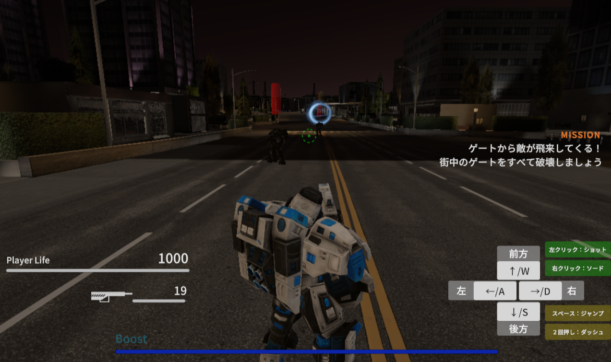
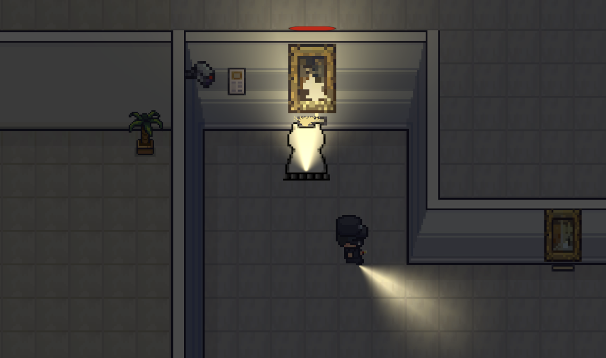
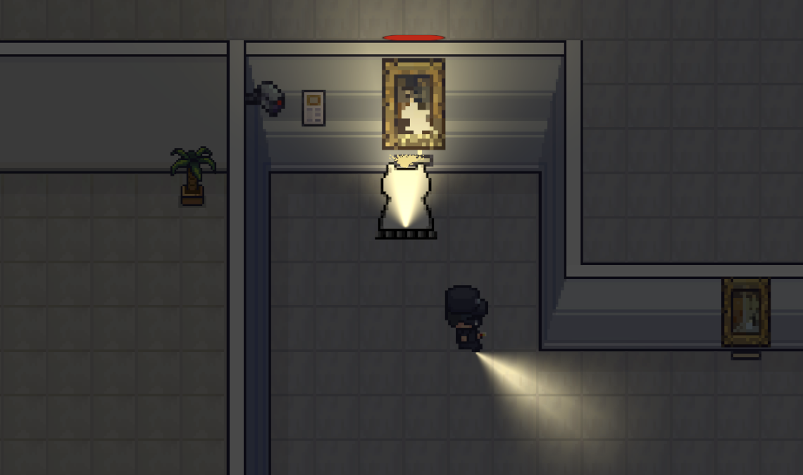
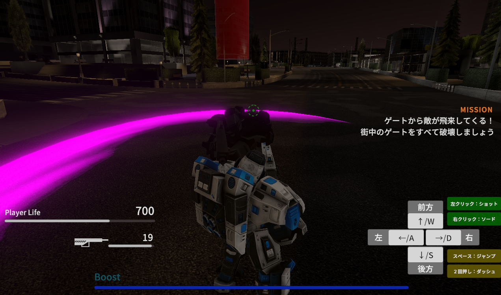
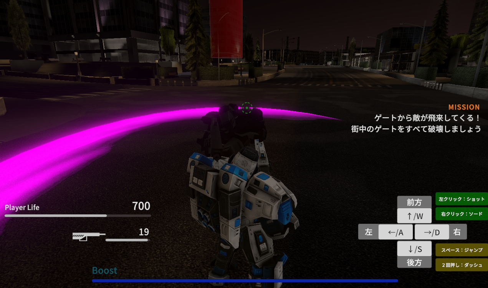

GAME
個人で制作したゲームをまとめています。
The History Cleañar(ザ・ヒストリークリーニャー)
2Dのトップダウン視点のRPGゲーム。夜の博物館で働く猫型清掃ロボが暴走を起こし、展示品を次々壊して回ります。館内に配置された警備員から逃げつつ、どれだけ「損害総額」を稼げるか競う背徳的な楽しさがあります。
Rovo Suvivor
職業訓練にて、4名チームで共同製作した3Dアクションゲームです。ロボットを動かし、エネミーを無限生成するゲートを潰しながら街を探索します。最後にボスを撃破する爽快なゲームです。

Escape Darkness

暗闇の館を探索する 2DのRPG。 限られた視界の中で探索し、鍵を見つけます。見つけた鍵と該当するドア見つけ、奥に潜むボスの間を目指します。 追跡してくる敵を避けながら、恐怖と緊張の中を生き延びましょう。

Design
グラフィック、ビジュアル制作をまとめています。
Tokyo NightLife Guide

訪日外国人向けにバーなど夜遊びスポットを紹介する“ナイトライフガイドブック”のエディトリアルデザイン。フルカラー写真ガイドの企画から出版までの全ての工程を担当。電子版と印刷版を展開。
View more and DownloadBrand Identity Design

ブランドコンセプトに基づいたロゴやショップカード、バナーなどのデザイン。
Printed Works

撮影で使用する看板・ポスター・ビラ広告などのデザイン
Video
動画撮影や編集などに携わった制作物をまとめています。


Runa Arai
大学卒業後、成人向け映像制作会社でデザインや編集補助、現場運営に携わる。その後、同会社にて、海外向け新規事業の少数精鋭チームのリードとして参画、ゼロベースからの立ち上げに従事した。退職後は職業訓練でWEB制作スキルやUnity、C#を習得。デザイン経験を活かしたサイト制作や、個人規模のゲーム開発をしている。


 



 
